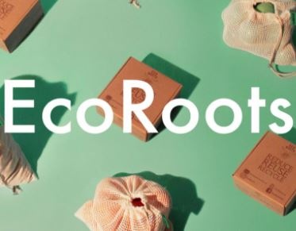
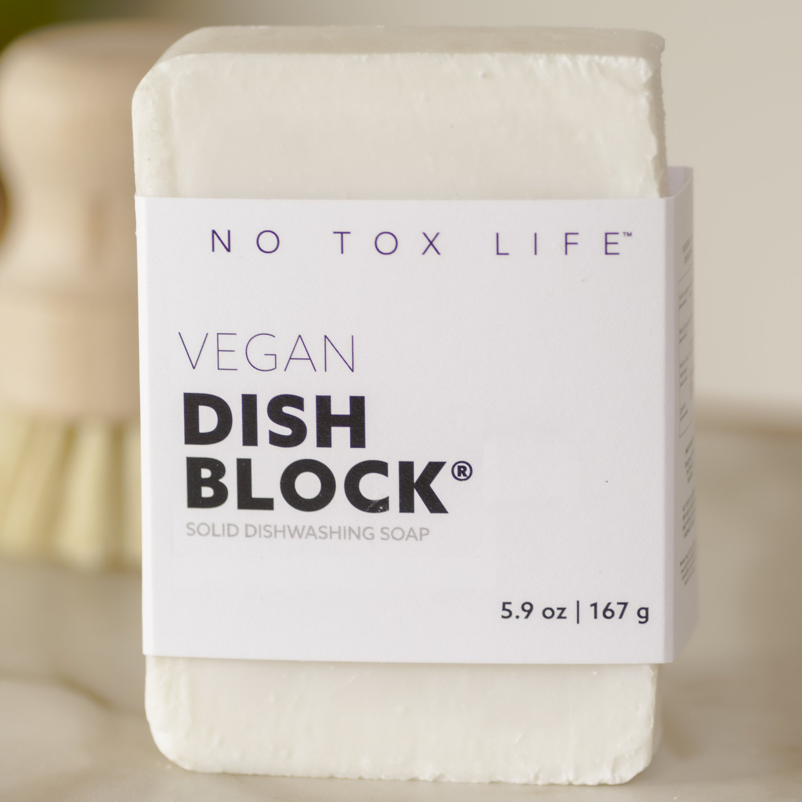
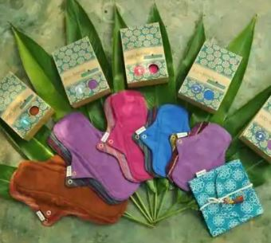
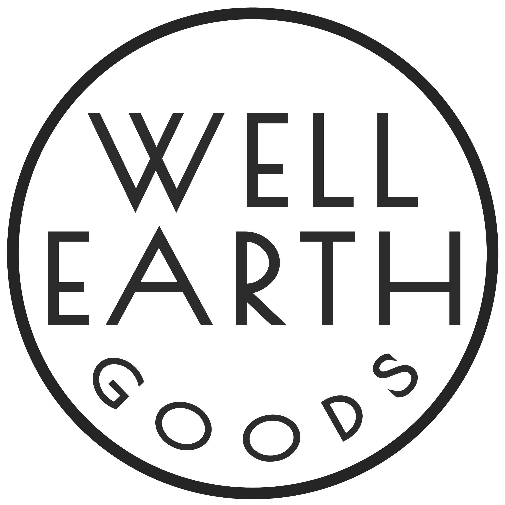
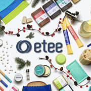
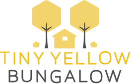
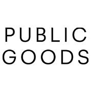
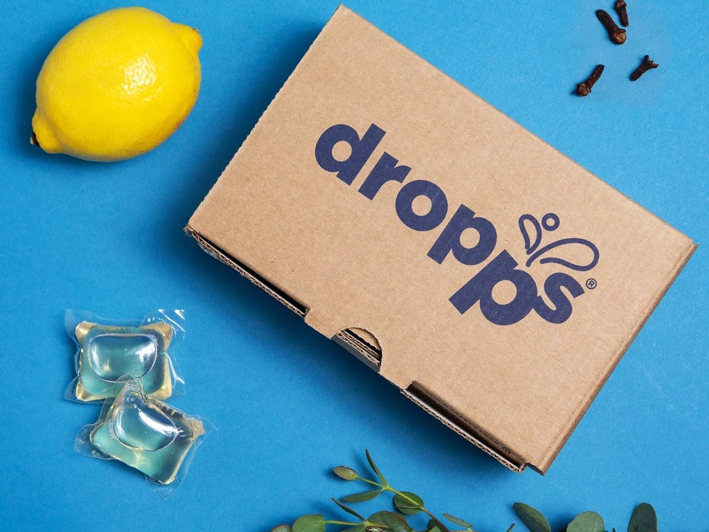

EcoRoots is all about minimalist, plastic-free, and low-waste alternatives to everyday bath, beauty, and kitchen products. From zero-waste dental floss to sustainable candles, they’ve got everything you could need for an eco-friendly home. They also sell organic and non-toxic personal care products. Everything is free of animal byproducts, SLS, palm oil, and plastic








